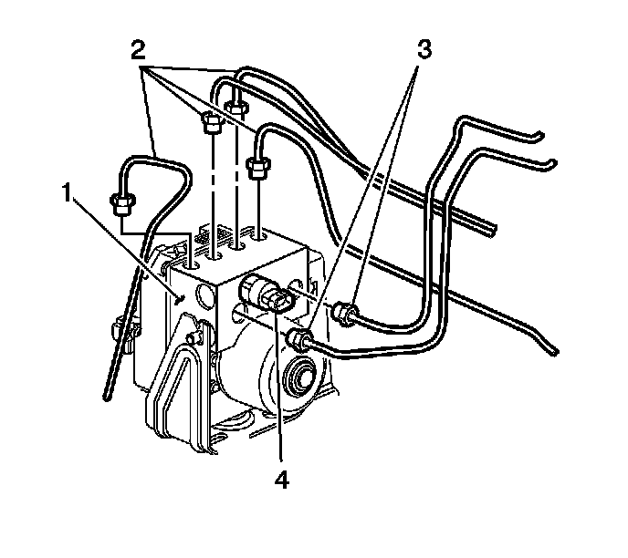

Hydraulic Control Assembly - Antilock Brakes: Service and Repair
Brake Pressure Modulator Valve Replacement
Removal Procedure
Caution: Refer to Brake Dust Caution (Brake Dust Caution) .
Caution: For safety reasons, the brake pressure modulator valve assembly must not be repaired, the complete unit must be replaced. With the exception of the EBCM, no screws on the brake pressure modulator valve assembly may be loosened. If screws are loosened, it will not be possible to get the brake circuits leak-tight and personal injury may result.
1. Turn OFF the ignition.
Important: The area around the electronic brake control module (EBCM) must be free from loose dirt to prevent contamination of disassembled ABS components.
2. Thoroughly clean all contaminants from around the EBCM.

Caution: Brake fluid may irritate eyes and skin. In case of contact, take the following actions:
* Eye contact-rinse thoroughly with water.
* Skin contact-wash with soap and water.
* If ingested-consult a physician immediately.
Notice: Refer to Brake Fluid Effects on Paint and Electrical Components Notice (Vehicle Damage Warnings) .
Important: Record the location of all brake pipes to the brake pressure modulator valve (BPMV) for use as an aid during installation.
3. Remove the 2 master cylinder brake pipes (3) from the BPMV (1).
4. Clean any brake fluid spillage from the BPMV (1).
5. Raise and support vehicle. Refer to Lifting and Jacking the Vehicle (Service and Repair) .
6. Remove the air deflector shield. Refer to Front Air Deflector Replacement (Service and Repair) .
7. Remove the wheelhouse liner. Refer to Wheelhouse Panel Replacement - Right Side (Service and Repair) .
Important: It is not necessary to remove the washer solvent container from the vehicle.
8. Remove the washer solvent container bracket. Refer to Windshield Washer Solvent Container Replacement (Service and Repair) .
9. Remove the 4 wheel brake pipes (2) from the BPMV (1).
Notice: To prevent equipment damage, never connect or disconnect the wiring harness connection from the EBCM with the ignition switch in the ON position.
10. Press the retainer on the EBCM electrical connector (1).

11. Rotate the EBCM connector tab (2) forward to the unlocked position.
12. Disconnect the EBCM electrical connector (1) from the EBCM and position out of the way.
13. Remove the front BPMV bracket nuts.
14. Remove the EBCM/BPMV assembly (1) from the BPMV bracket.
15. Remove the 4 EBCM to BPMV screws.

16. Clean the surface of the EBCM/BPMV assembly.
17. Remove the EBCM (1) from the BPMV (2).
Installation Procedure
1. Clean the seal surface of the BPMV.
2. Install the EBCM (1) to the BPMV (2).
3. Verify that the internal pump motor connector (3) is installed into the new EBCM (1) prior to EBCM replacement.

Notice: Refer to Fastener Notice (Fastener Notice) .
4. Install the 4 screws connecting the EBCM to the BPMV.
Tighten the screws in sequence (1-4) to 5 N.m (44 lb in).

Important: Verify that the rubber isolator is installed on the BPMV. The isolator protects the EBCM/BPMV assembly from vehicle vibrations.
5. Install the EBCM/BPMV assembly (1) to the BPMV bracket.
6. Install the BPMV bracket nuts (2).
Tighten the nuts to 10 N.m (89 lb in).

Notice: To prevent equipment damage, never connect or disconnect the wiring harness connection from the EBCM with the ignition switch in the ON position.
7. Connect the EBCM electrical connector (1) to the EBCM (2).
8. Rotate the EBCM connector tab (2) rearward to the locked position.
Caution: The brake pipes must be fully installed to the brake pipe mounting retainers on the frame. Failure to properly retain the brake pipes may cause the pipes to contact the frame and/or the transmission resulting in possible loss of brake fluid and personal injury.
Caution: Make sure brake pipes are correctly connected to BPMV. If brake pipes are switched by mistake Inlet vs. Outlet, wheel lockup will occur and personal injury may result.
Important: If a new BPMV is being installed, remove the shipping plugs from the valve openings.
9. Install the 4 wheel brake pipes (2) to the BPMV (1) using the locations recorded during the removal procedure.
Tighten the pipes to 27 N.m (20 lb ft).
10. Install the washer solvent container bracket. Refer to Windshield Washer Solvent Container Replacement (Service and Repair) .
11. Install the wheelhouse liner. Refer to Wheelhouse Panel Replacement - Right Side (Service and Repair) .
12. Install the air deflector shield. Refer to Front Air Deflector Replacement (Service and Repair) .
13. Lower the vehicle.
14. Install the 2 master cylinder brake pipes (3) to the BPMV (1) using the locations recorded during the removal procedure.
Tighten the pipes to 27 N.m (20 lb ft).
15. If equipped with a brake fluid pressure sensor (4), connect the electrical connector.
16. Fill and bleed the hydraulic brake system. Refer to Master Cylinder Reservoir Filling (Master Cylinder Reservoir Filling) and Hydraulic Brake System Bleeding (Pressure) (Service and Repair)Hydraulic Brake System Bleeding (Manual) (Service and Repair) .
17. Bleed the BPMV. Refer to Antilock Brake System Automated Bleed Procedure (Service and Repair) .
18. Perform the ABS Diagnostic System Check. Refer to Diagnostic System Check - Vehicle (Initial Inspection and Diagnostic Overview) .